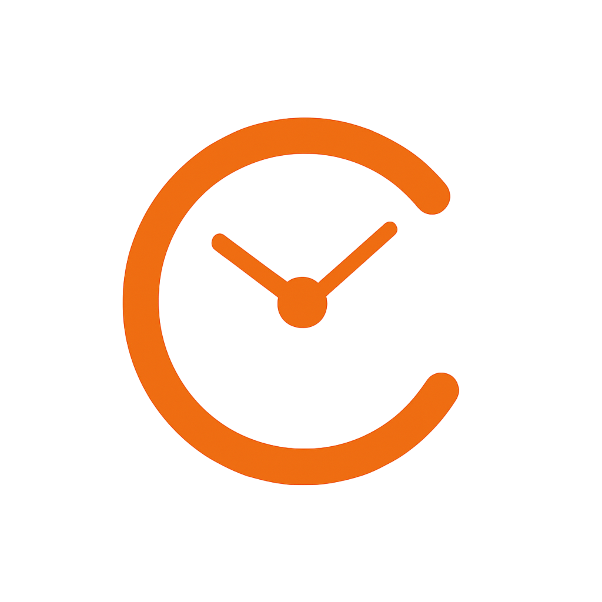

[ Jiseok Jung · Portfolio ]
Software Engineer.
[ 01 — About ]
Start from
the problem.
안녕하세요, 소프트웨어 엔지니어 정지석입니다. 필요한 기능을 구현하는 데서 한 걸음 더 나아가, 서비스의 흐름 안에서 기술이 어떤 역할을 하는지 고민합니다.
01Backend & API
Java · Spring Boot · FastAPI
인증, 도메인 로직, REST · WebSocket 실시간 통신
02AI & Data
OpenAI · Gemini · pgvector
AI 연동, 검색 평가, OpenCV 영상 분석
03Product & Delivery
React · Docker · AWS EC2
사용자 화면부터 실행 환경까지
[ 02 — Approach ]
Chaos, then form.
흩어진 요구사항과 데이터를 하나의 구조로 정리합니다. 면접 서비스와 실시간 채팅을 만들고, RAG 검색 평가와 비전 API로 경험을 넓혀가고 있습니다.
커서로 흩트려 보세요
[ 03 — Selected work ]
And then,
it ships.
직접 만들고, 연결하고, 결과를 확인한 네 개의 프로젝트입니다.
[ 04 — Projects ]
만들며 쌓은 경험04
GazeSignalAPI
Webcam→Vision→Events
GazeSignal API
비전 API웹캠의 시각 신호를 구조화된 이벤트로
웹캠 영상을 로컬에서 분석해 대략적인 시선 방향, 얼굴 존재, 머리 자세를 전달합니다. 원본 영상 대신 파생된 신호를 REST와 WebSocket으로 연결합니다.
구현 내용
- 얼굴·눈·홍채 랜드마크와 solvePnP 기반 머리 자세 추정
- 5점·9점 캘리브레이션, 상태 평활화와 전환 안정화
- 최신 프레임 버퍼, 카메라 연결 해제와 느린 소비자 대응
- SQLite 세션 요약과 WebSocket 이벤트 구독
일반 웹캠 기반의 대략적인 방향 추정입니다. 집중도·감정·의도를 판정하지 않습니다.

chronote.관심사로 연결되는 대화AI matching
Chronote
매칭 · 실시간 채팅같은 관심사를 가진 사람들을 연결하는 AI 매칭
관심 주제를 입력하면 한국어 임베딩으로 맞는 채팅방을 찾습니다. 적합한 방이 없으면 새로 만들고, 실시간 그룹 채팅으로 함께 공부합니다.
구현 내용
- FastAPI 한국어 임베딩 기반 채팅방 유사도 매칭
- STOMP·WebSocket 실시간 그룹 채팅
- MySQL 정형 데이터와 MongoDB 채팅 메시지 저장
- Node.js·Express에서 Java·Spring Boot로 마이그레이션
UI 데모는 기존 학습 관리 화면입니다. 현재 저장소의 전체 백엔드 기능을 실행하는 데모는 아닙니다.
[ 05 — Journey ]
배우고, 만들어 온 과정.
2024.03 — 2026.08Education
단국대학교
소프트웨어학과
2025.12 — 2026.03Graduation project
ITPT
CS 기술 면접 준비 플랫폼 · 서비스 개발과 AI 연동
2025.06 — 2025.08Team project
Chronote
AI 기반 학습 관리 · 관심사 매칭과 실시간 채팅